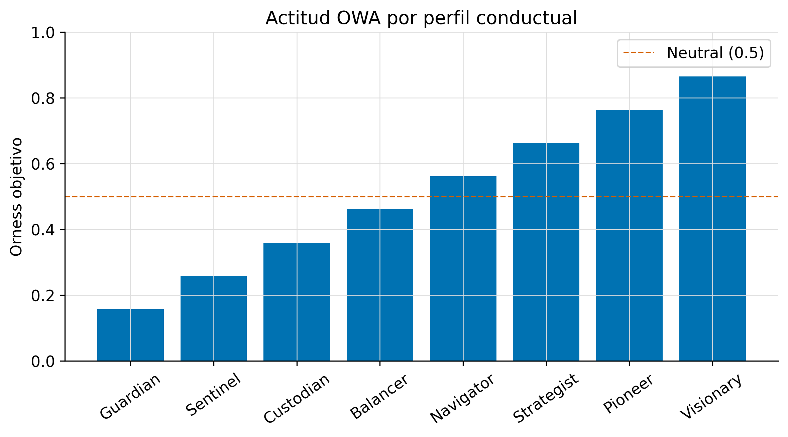
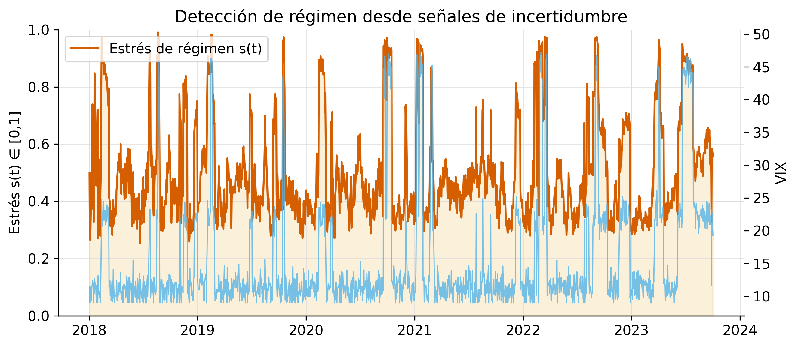
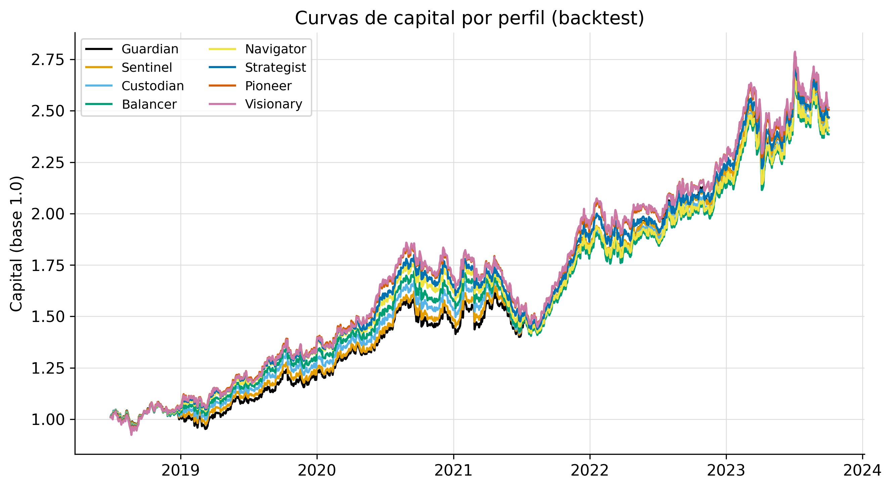
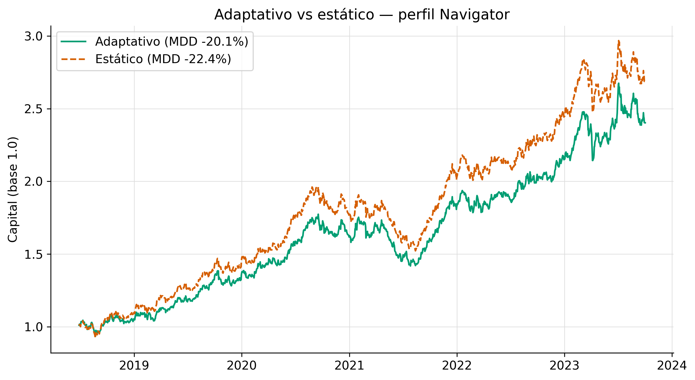
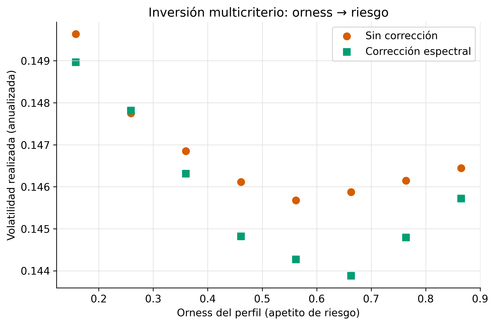

Panel sintético reproducible (semilla fija). Generado por
scripts/run_demo.py. Cierra OE2 (validación), OE3 (adaptativo) y OE4
(producto + validación empírica).


| Perfil | Retorno an. | Vol an. | Sharpe | Máx DD | RMSE vol | Orness ef. medio |
|---|---|---|---|---|---|---|
| Guardian | 18.03% | 14.90% | 1.210 | -14.24% | 0.044 | 0.141 |
| Sentinel | 18.00% | 14.78% | 1.218 | -14.96% | 0.043 | 0.196 |
| Custodian | 17.59% | 14.63% | 1.202 | -16.22% | 0.042 | 0.252 |
| Balancer | 17.30% | 14.48% | 1.195 | -18.26% | 0.042 | 0.308 |
| Navigator | 17.46% | 14.43% | 1.210 | -20.05% | 0.040 | 0.363 |
| Strategist | 18.04% | 14.39% | 1.254 | -20.11% | 0.039 | 0.419 |
| Pioneer | 18.35% | 14.48% | 1.268 | -21.18% | 0.038 | 0.474 |
| Visionary | 18.45% | 14.57% | 1.266 | -22.06% | 0.038 | 0.530 |



Quintero Avellaneda, D. — Universidad Nacional de Colombia, Sede Manizales.